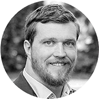
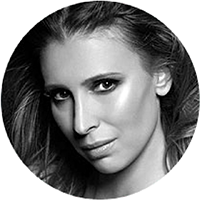
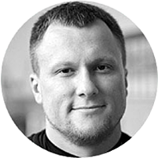

<section id="organizers">
  <div class="container">
    <div class="section-heading scrollpoint sp-effect3">
      <h1 class="text-center">Організатори</h1>
      <div class="divider"></div>
    </div>
    <div class="row">
      <div class="col-md-4 col-sm-4 col-xs-12">
        <div class="about-item scrollpoint sp-effect1">
          
          <h3>Сергій Конюшок</h3>
          <p>Президент федерації стронгмену України, майстер спорту України міжнародного класу, чемпіон та рекордсмен світу зі стронгмену.</p>
          <div class="social">
            <a href="https://www.instagram.com/konyushok_sergiy/" target="_blank" class="scrollpoint sp-effect3"><i class="fa fa-instagram fa-lg"></i></a>
            <a href="https://www.facebook.com/sergiy.konyushok" target="_blank" class="scrollpoint sp-effect3"><i class="fa fa-facebook fa-lg"></i></a>
          </div>
        </div>
      </div>

      <div class="col-md-4 col-sm-4 col-xs-12">
        <div class="about-item scrollpoint sp-effect5">
          
          <h3>Анна Лащук</h3>
          <p>
            Головний тренер у Sharel day spa. Голова громадської організації „Здорового способу життя”, дипломований та сертифікований фітнес-тренер групових та персональних тренувань, чемпіонка International dance competition Leader.</p>
          <div class="social">
            <a href="https://www.instagram.com/annalaschuk/" target="_blank" class="scrollpoint sp-effect3"><i class="fa fa-instagram fa-lg"></i></a>
            <a href="https://www.facebook.com/anna.laschuk" target="_blank" class="scrollpoint sp-effect3"><i class="fa fa-facebook fa-lg"></i></a>
          </div>
        </div>
      </div>
      <div class="col-md-4 col-sm-4 col-xs-12">
        <div class="about-item scrollpoint sp-effect2">
          
          <h3>Сергій Пуцов</h3>
          <p>
            Фітнес-директор клубу Discipline. Старший тренер команди Warm Body Cold Mind<sup>©</sup>. Кандидат наук з фiзичного виховання. Майстер спорту з важкої aтлетики. Мiжнародний експерт та презентер<br>у сферi фiтнесу.
          </p>
          <div class="social">
            <a href="https://www.instagram.com/putsoff/" target="_blank" class="scrollpoint sp-effect3"><i class="fa fa-instagram fa-lg"></i></a>
            <a href="https://www.facebook.com/putsov.sergei" target="_blank" class="scrollpoint sp-effect3"><i class="fa fa-facebook fa-lg"></i></a>
          </div>
        </div>
      </div>
    </div>
  </div>
</section>